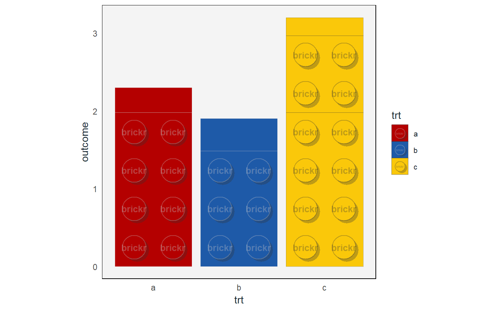

geom_brick_col() is the brickr version of ggplot2::geom_col().
Bar height is determined by values in the data using the y aesthetic. With the exception of fill, aesthetics available in ggplot2::geom_col() are generally not enabled here.
geom_brick_col(mapping = NULL, data = NULL, position = "dodge", two_knob = TRUE, split_bricks = TRUE, min_radius_for_text = 0.02, label = "brickr", label_scale = 1, ..., width = NULL, na.rm = FALSE, show.legend = NA, inherit.aes = TRUE)
Arguments
| mapping | Set of aesthetic mappings created by |
|---|---|
| data | The data to be displayed in this layer. There are three options: If A A |
| position | It it not recommended to use |
| two_knob | Logical. Each bar is two knobs / studs wide. When rendering many |
| split_bricks | Logical. For simpler bars, do not split into individual bricks. Knobs still render. |
| min_radius_for_text | Knob radius as a percentage of view port. If the calculated radius is lower than this value, embossed label will not appear in knobs. |
| label | Character string to include as embossed text inside brick knobs. Maximum 6 characters. |
| label_scale | Scale text size of label as a percentage. Sizing for the embossed text can be off. A best attempt at the text size is calculated from the device size. Zooming a plot in the RStudio window will not update the text size. If the automated size doesn't look correct after rendering the chart, use this scale. |
| ... | Other arguments passed on to |
| width | Bar width. By default, set to 90% of the resolution of the data. |
| na.rm | If |
| show.legend | logical. Should this layer be included in the legends?
|
| inherit.aes | If |
See also
Other Graphs: coord_brick,
geom_brick_rect,
scale_fill_brick, theme_brick
Examples
#geom_brick_col should be used in conjunction with other brickr charting #functions, especially coord_brick. df <- data.frame(trt = c("a", "b", "c"), outcome = c(2.3, 1.9, 3.2)) ggplot(df, aes(trt, outcome)) + geom_brick_col() + coord_brick()#For official LEGO colors, use with scale_fill_brick and theme_brick. ggplot(df, aes(trt, outcome)) + geom_brick_col(aes(fill = trt)) + scale_fill_brick() + coord_brick() + theme_brick()